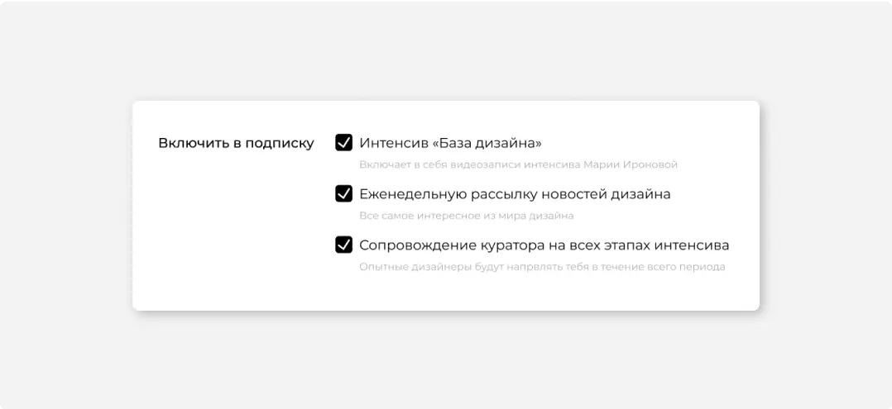
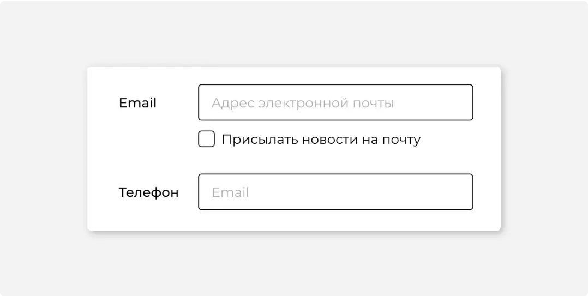
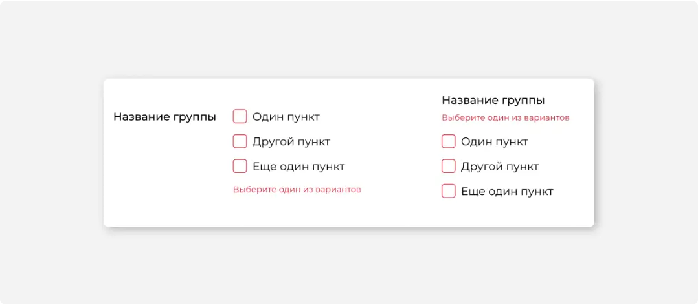
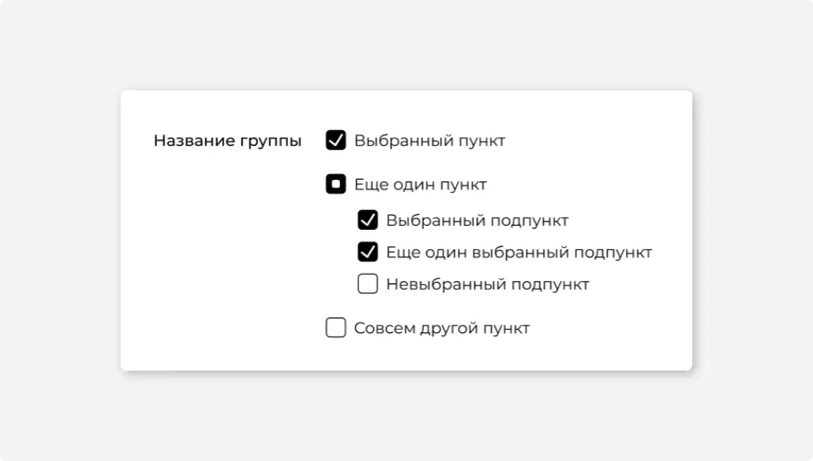
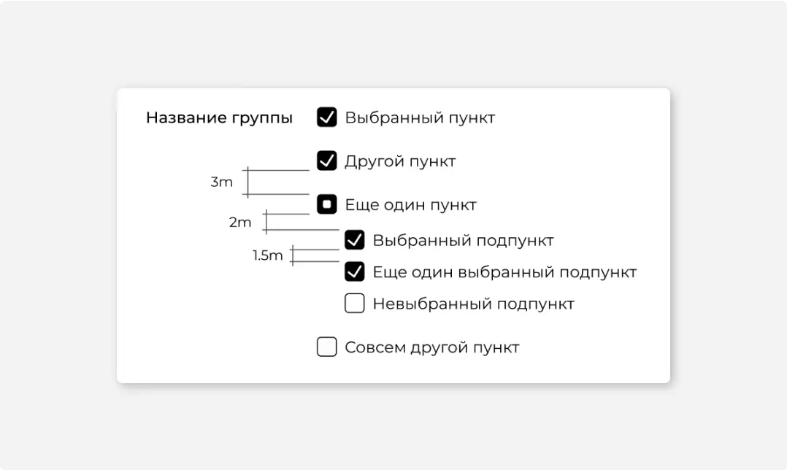

Включить в подписку
#1
Назначение
Чекбокс используется для управления параметром с двумя состояниями.
Используйте чекбокс для:
выбора элементов списка. Например, выбор документов для массовых действий;
выбора параметров. Например, включение уведомлений и выбор случаев, в которых нужно присылать уведомления.
Чекбокс не запускает действие немедленно. Как правило для этого нужно нажать подтверждающую кнопку. Для немедленного включения какого-то режима в интерфейсе лучше подходит тогл.
#2
Описание работы
Клик по названию или по самому чекбоксу приводит к его выбору или снятию выбора.
Если пользователю может быть не очевидно, что произойдет, при включении чекбокса, объясните это дополнительным текстом или используйте группу радиокнопок.
Если чекбокс связан по смыслу с другим элементом формы, их можно группировать
Варианты, которые нельзя выбрать в списке чекбоксов, должны быть заблокированы. Валидация может быть только в том случае, если обязательно выбрать хотя бы один вариант.
Чекбоксы с валидацией выделяются красной рамкой. Если заголовок группы находится слева, текст валидации располагайте под группой чекбоксов. Если заголовок группы находится над группой чекбоксов, текст ошибки располагайте сразу под заголовком группы.
#3
Частично выбранный чекбокс
Иногда списки с чекбоксами используются в справочниках или настройках и содержат дочерние элементы.
Если выбрана только часть дочерних чекбоксов, родительский чекбокс переходит в состояние «частично выбран».
#4
Размеры и расположение
В общем случае группа чекбоксов должна располагаться в 1 столбец. В списке чекбоксов, размещенных горизонтально или в несколько столбцов тяжелее ориентироваться, потому что не всегда очевидна граница группы.
Расстояние между вложенными пунктами больше расстояния между основной группой элементов на 0,5m. В этом случае расстояние между остальными элементами увеличивается на 1m и становится 3m.
#5
Состояния